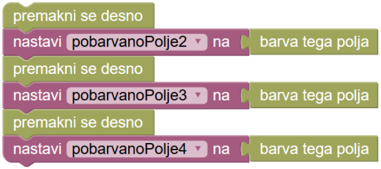
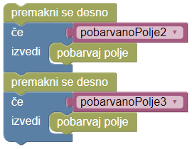
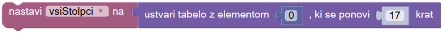
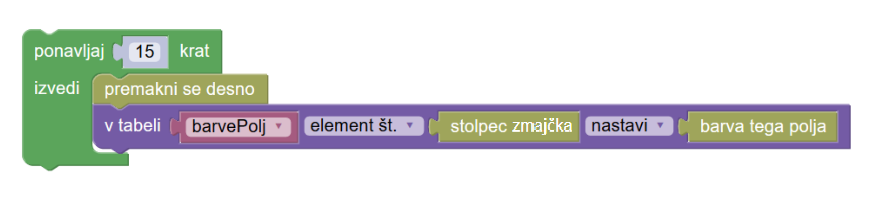
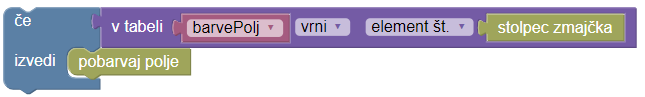

Zmajcek ustvarja tabele


Napiši zmajčku navodilo, po katerem bo pobarval vsa označena polja. Oznake se nahajajo na vseh poljih, ki ležijo pod sivo pobarvanimi polji. Spodnja vrstica je podobno nastavljena kot zgornja, vendar v obrnjenem vrstnem redu: na polju 2 spodajje oznaka, če je polje 15 zgoraj pobarvano, na polju 3 spodaj je oznaka, če je pobarvano polje 14 zgoraj in tako naprej. Polje v spodnji vrstici vsebuje oznako, če je nad njim več pobarvanih polj kot belih polj.
Ko se zmajček premakne preko druge vrstice, se ne more več vrniti.
Zmajček si mora zapomniti, katera polja imajo oznake v prvi vrstici, da pobarva pripadajoča polja v drugi vrstici.
Ustvariš lahko spremnljivko za vsako polje, v katero nato shraniš prebrano vrednost:

desno() barvaPolja2 = barvaPolja() desno() barvaPolja3 = barvaPolja() desno() barvaPolja4 = barvaPolja() ...
Potem za vsako polje v drugi vrstici prebereš pripadajočo vrednost in določiš, ali mora zmajček pobarvati to polje:
desno() if (barvaPolja2): pobarvaj() desno() if (barvaPolja3): pobarvaj() ...

Vendar namesto da nastaviš 15 različnih spremeljivk za vsako izmed 15 razičnih vrednosti, uporabi seznam. Seznam je vrsta spremenljivke, ki lahko shrani več vrednosti. Seznam, ki je prazen, ustvarimo tako, da spremenljivki 'vsiStolpci' priredimo:
vsiStolpci=[0]*17

Vrednosti lahko potem shranimo v elemente seznama z uporabo števila elementa in vrednosti tega elementa in to naredimo tako, da spremenimo vrednost elementa, ki je označen s številom elementa.
V tem primeru želimo shraniti vrednosti za vsako od 15 polj pred zmajčkom. Za ta namen uporabimo senzor, ki sporoči število stolpca zmajčka (to bo število elementa v seznamu). V ta element seznama bomo shranili odziv senzorja, ko bo zmajček na polju v tem stolpcu:
for loop in range(15):
desno()
barvaPolj[stolpec()] = barvaPolja()


V drugi vrstici lahko preberemo vrednost elementa seznama, ki je določen s številom stolpca, v katerem je zmajček. To naredimo tako:
if (barvaPolj[stolpec()]):
pobarvaj()


V programu moraš obrniti seznam.
Namig: naloga ima dva različna testa.